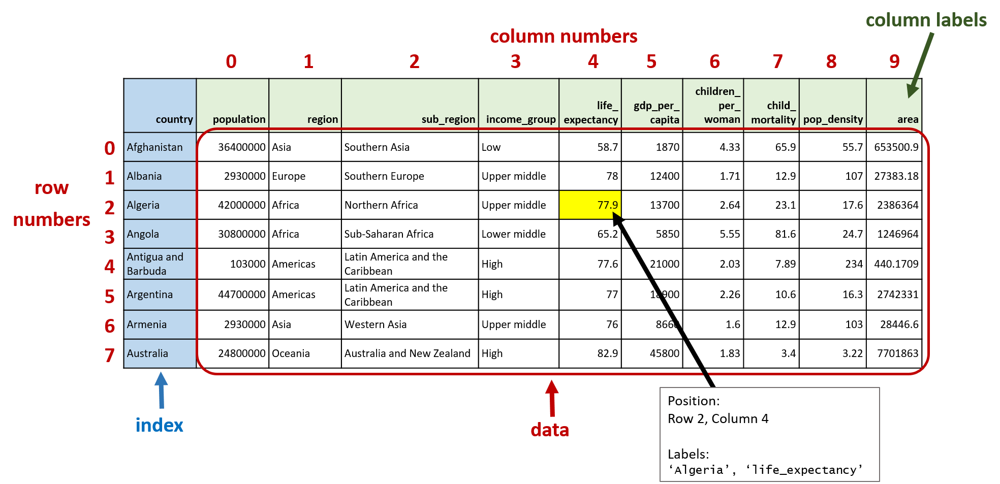

Pandas Cheatsheet
Contents
Pandas Cheatsheet¶
Importing pandas Library¶
import pandas
In general, it’s good practice to collect all your
importcommands together and put them at the start of the notebook.
DataFrames and Series¶
Data in pandas is organized into DataFrames and Series.
DataFrame: 2-dimensional array, like a table in a spreadsheet
The rows are axis 0
The columns are axis 1
Series: 1-dimensional array, like a single column or row in a spreadsheet
Each individual column or row of a DataFrame is represented as a Series
Reading a CSV File¶
To read a CSV file and store it as a DataFrame variable:
df = pandas.read_csv('some_cool_data.csv')
Missing data in a DataFrame or Series is represented as NaN (“not a number”).
Saving to a CSV File¶
To save a DataFrame to a CSV file:
df.to_csv('cool_output.csv', index=False)
To include the DataFrame’s index as a column in the CSV file, omit the
index=Falsekeyword argument.
Quick and Easy Summaries of a DataFrame¶
feature |
dataframe attribute/method |
|---|---|
Useful Attributes |
|
Number of rows and columns (rows first, columns second) |
|
Names and data types of each column |
|
Just the names of each column |
|
Rows at a Glance |
|
First |
|
Last |
|
A random sampling of |
|
Summary Statistics¶
Full set of summary statistics (min, max, mean, standard deviation, etc.) for each numerical column of a DataFrame:
df.describe()
Mean value of each column:
df.mean()
And similarly for other summary statistics: df.min(), df.max(), df.median(), df.std()
Working with DataFrame Columns¶
Single Columns¶
Each column of a DataFrame is a Series.
series_X = df['X']
Most DataFrame methods can be applied to a Series, for example:
df['X'].head()
df['X'].max()
Basic calculations with a Series and adding a new column to a DataFrame:
df['Double X'] = 2 * df['X']
Multiple Columns¶
Use a list of column names to select several columns of a DataFrame, in a specified order:
df_subset = df[['E', 'A', 'C']]
Plots¶
Create quick and easy plots of Series and DataFrames with the plot method, for example:
Line plot of one column of a DataFrame:
df['A'].plot()
Line plot of column
'B'vs. column'A'of a DataFrame:
df.plot(x='A', y='B')
Histogram of one column of a DataFrame:
df['A'].plot(kind='hist', bins=30)
Plot all columns of a DataFrame, with each column as a line on the same plot:
df.plot()
Plot bar charts of each column of a DataFrame, with a separate subplot for each column:
df.plot(kind='bar', subplots=True)
Plots can be adjusted with keyword arguments such as figsize, fontsize, title, colormap.
To adjust the size of a graph, use the
figsizekeyword argument to theplotmethod, wherefigsizeis a tuple of (width, height). For example to create 6” wide by 8” tall figure with subplots:
df.plot(kind='bar', subplots=True, figsize=(6, 8))
Unique Values & Counting¶
For a column df['A'] which contains many repeated values (such as categories), some useful summary methods are:
feature |
method |
|---|---|
Unique values |
|
Number of unique values |
|
Counts of each unique value |
|
Note: The
unique,nunique, andvalue_countsmethods can only be applied to a Series (not a DataFrame)
Sorting¶
Sorting a DataFrame based on the values in the column 'B':
df.sort_values('B')
To sort in descending order, use the keyword argument ascending=False.
Sorting a Series:
series_a.sort_values()
Filtering¶
To select a subset of rows with a filter:
Create a filter (Boolean Series) using a comparison operator or other functions (such as the
isnullmethod)Use the filter to extract the desired rows from the DataFrame
Example: comparison operator
warm = weather_data['Temperature (C)'] > 25
weather_warm = weather_data[warm]
You can also use Boolean Series and DataFrames to count occurrences of specified criteria, for example: count the missing values in each column of a DataFrame with df.isnull().sum()
Aggregation¶
For basic aggregation operations, use the groupby method chained with an aggregation method (e.g., sum, mean, sum, max, etc.).
For example, to find the sum totals of column 'population' grouped by column 'region': `
world.groupby('region')['population'].sum()
You can also group by multiple columns:
world.groupby(['region', 'income_group'])['population'].sum()
For more complex aggregations, you can use the agg method.
Specify a list of aggregation statistics, for example:
world.groupby('region')['population'].agg(['sum', 'min', 'max'])
Use a dictionary to specify different aggregation statistics for different columns, for example:
agg_dict = {'population' : 'sum',
'life_expectancy' : ['min', 'max']}
world.groupby('region').agg(agg_dict)
Setting the Index of a DataFrame¶
The index of a DataFrame can be set with the set_index method. For example, to set the column 'country' as the index of DataFrame world and save the output as a new DataFrame:
world_new = world.set_index('country')
Anatomy of a DataFrame¶

Each cell in a DataFrame is associated with:
A row position and column position (integers, starting from 0), and
A row label and column label
Row and column labels are part of the DataFrame’s metadata, stored in attributes:
df.indexcontains the labels for the DataFrame’s rowsdf.columnscontains the labels for the DataFrame’s columns
df.valuescontains the underlying data array
Selection Methods¶
There are three main ways of selecting subsets of a DataFrame (or Series):
- Using only square brackets `[]`
- Positional indexing with `.iloc[]`
- Label-based indexing with `.loc[]`
1. Using only square brackets¶
Use a Boolean Series to select rows matching some criteria |
|
Use a list of column names to select several columns in a specified order |
|
Select a single column (as a Series) |
|
Select a single column (as a DataFrame) |
|
2. Positional indexing with iloc¶
With iloc, we specify the row selection first, followed by column selection, separated by a comma. For example, selecting a single cell at row 2, column 4:
df.iloc[2, 4]
With iloc can select:
A single cell
A single row or column
Slices of rows and/or columns
As with Python lists,
ilocslices are inclusive of the start bound and exclusive of the stop bound
Multiple rows and/or columns in arbitrary order, using a list of positions
A few examples:
df.iloc[100:201:2, [5, 2, 4]]
df.iloc[[4, 2], 3:7]
df.iloc[175:, :]
3. Label-based indexing with loc¶
As with iloc, we specify the row selection first, followed by column selection, separated by a comma, but using the row and column labels instead of their positions. For example, selecting a single cell at a row labelled 'Algeria' and a column labelled 'life_expectancy':
world_new.loc['Algeria', 'life_expectancy']
Similar to iloc, with loc we can select:
A single cell
A single row or column
Slices of rows and/or columns
However, unlike
ilocand Python list slicing,locslices are inclusive of the start bound but also inclusive of the stop bound.Example:
world_new.loc['Canada':'Denmark', 'income_group':'gdp_per_capita']
Multiple rows and/or columns in arbitrary order, using a list of labels
We can also select rows and/or columns with a Boolean Series, and mix and match these with the other selection options listed above, for example:
densely_populated = world_new['pop_density'] > 500
world_new.loc[densely_populated, ['region', 'pop_density', 'population']]